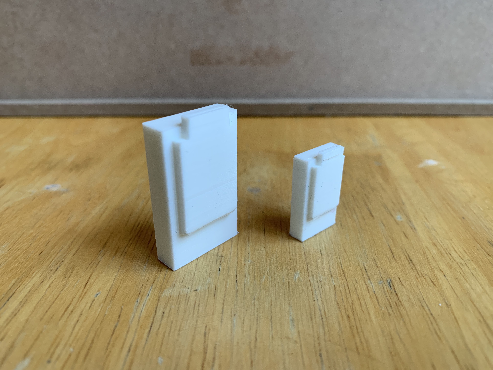
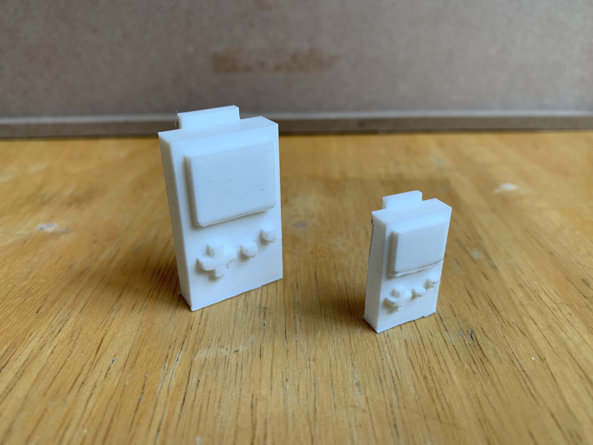

So hopefully you can tell that my 3D print came out as one of the first gameboys. I was shooting for the gameboy color but you guys let me know which one you think it looks most like. I chose the gameboy because it was near the new era of hand held video games. Plus this thing was glued to my hands whenever we had long family drives for holiday dinners or on the way to vacation. As much as I like the back of it I might make it completely flat so that when I enlarge it I can print it on its back. This way the front of it gets a cleaner print.


This is my comparison from my second print to my first. I think it came out better than the smaller one and I still decided to keep the back of it instead of chopping it off. It could use a little touching up though but overall I was satisfied with how it came out.